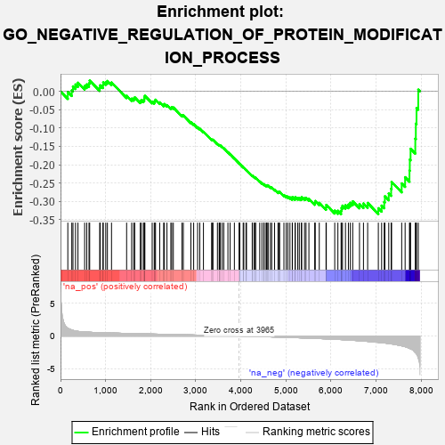
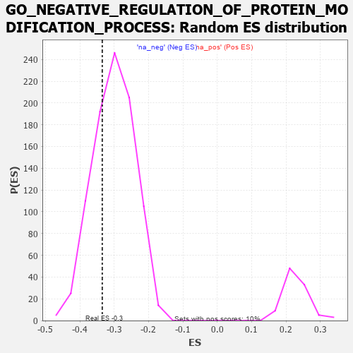

| | | Dataset | 7d |
| Phenotype | NoPhenotypeAvailable |
| Upregulated in class | na_neg |
| GeneSet | GO_NEGATIVE_REGULATION_OF_PROTEIN_MODIFICATION_PROCESS |
| Enrichment Score (ES) | -0.33460173 |
| Normalized Enrichment Score (NES) | -1.1133369 |
| Nominal p-value | 0.2849224 |
| FDR q-value | 0.7323798 |
| FWER p-Value | 1.0 |
Table: GSEA Results Summary

Fig 1: Enrichment plot: GO_NEGATIVE_REGULATION_OF_PROTEIN_MODIFICATION_PROCESS
Profile of the Running ES Score & Positions of GeneSet Members on the Rank Ordered List
| PROBE | GENE SYMBOL | GENE_TITLE | RANK IN GENE LIST | RANK METRIC SCORE | RUNNING ES | CORE ENRICHMENT | | 1 | SPI1 | | | 162 | 1.182 | -0.0015 | No |
| 2 | INSM1 | | | 250 | 0.939 | 0.0026 | No |
| 3 | HGF | | | 276 | 0.870 | 0.0135 | No |
| 4 | WEE2 | | | 333 | 0.766 | 0.0188 | No |
| 5 | BAX | | | 387 | 0.711 | 0.0235 | No |
| 6 | PKN1 | | | 535 | 0.619 | 0.0148 | No |
| 7 | CCNB1 | | | 581 | 0.601 | 0.0188 | No |
| 8 | GLMN | | | 632 | 0.583 | 0.0219 | No |
| 9 | NOC2L | | | 647 | 0.578 | 0.0295 | No |
| 10 | IGBP1 | | | 869 | 0.514 | 0.0096 | No |
| 11 | HDAC8 | | | 881 | 0.510 | 0.0165 | No |
| 12 | PDCD4 | | | 941 | 0.497 | 0.0170 | No |
| 13 | PTPA | | | 947 | 0.497 | 0.0244 | No |
| 14 | MEN1 | | | 1003 | 0.483 | 0.0252 | No |
| 15 | AKT1 | | | 1040 | 0.476 | 0.0283 | No |
| 16 | NCK2 | | | 1131 | 0.458 | 0.0242 | No |
| 17 | U2AF2 | | | 1466 | 0.396 | -0.0119 | No |
| 18 | PTPRT | | | 1578 | 0.378 | -0.0200 | No |
| 19 | N4BP1 | | | 1622 | 0.370 | -0.0194 | No |
| 20 | TPPP | | | 1646 | 0.365 | -0.0165 | No |
| 21 | LRP5 | | | 1769 | 0.342 | -0.0265 | No |
| 22 | STRAP | | | 1793 | 0.339 | -0.0239 | No |
| 23 | PTPRQ | | | 1839 | 0.330 | -0.0243 | No |
| 24 | OTUB1 | | | 1857 | 0.326 | -0.0212 | No |
| 25 | SMAD4 | | | 1860 | 0.326 | -0.0162 | No |
| 26 | NUP62 | | | 1871 | 0.324 | -0.0122 | No |
| 27 | VPS25 | | | 2033 | 0.300 | -0.0279 | No |
| 28 | KDM3A | | | 2078 | 0.294 | -0.0287 | No |
| 29 | TAF7 | | | 2092 | 0.292 | -0.0257 | No |
| 30 | BMP7 | | | 2107 | 0.290 | -0.0228 | No |
| 31 | TIPRL | | | 2200 | 0.277 | -0.0300 | No |
| 32 | XRCC1 | | | 2287 | 0.262 | -0.0367 | No |
| 33 | GSKIP | | | 2304 | 0.259 | -0.0346 | No |
| 34 | SIN3A | | | 2361 | 0.251 | -0.0376 | No |
| 35 | KDM1A | | | 2447 | 0.237 | -0.0446 | No |
| 36 | UBXN1 | | | 2467 | 0.232 | -0.0433 | No |
| 37 | KAT2B | | | 2502 | 0.226 | -0.0440 | No |
| 38 | ZGPAT | | | 2694 | 0.200 | -0.0651 | No |
| 39 | SLIT2 | | | 2724 | 0.195 | -0.0656 | No |
| 40 | WDR5 | | | 2892 | 0.168 | -0.0842 | No |
| 41 | SOCS4 | | | 2953 | 0.157 | -0.0893 | No |
| 42 | UFL1 | | | 3041 | 0.144 | -0.0981 | No |
| 43 | CHP1 | | | 3089 | 0.138 | -0.1019 | No |
| 44 | PAX6 | | | 3170 | 0.127 | -0.1100 | No |
| 45 | TAB1 | | | 3351 | 0.097 | -0.1314 | No |
| 46 | SMAD7 | | | 3369 | 0.093 | -0.1320 | No |
| 47 | GMFB | | | 3381 | 0.091 | -0.1320 | No |
| 48 | CDK5 | | | 3480 | 0.080 | -0.1432 | No |
| 49 | UBR5 | | | 3518 | 0.074 | -0.1467 | No |
| 50 | HDAC3 | | | 3528 | 0.072 | -0.1467 | No |
| 51 | PIN1 | | | 3543 | 0.069 | -0.1473 | No |
| 52 | PARD3 | | | 3584 | 0.063 | -0.1514 | No |
| 53 | CBL | | | 3621 | 0.056 | -0.1551 | No |
| 54 | NF1 | | | 3713 | 0.040 | -0.1660 | No |
| 55 | SKI | | | 3762 | 0.032 | -0.1716 | No |
| 56 | DGKQ | | | 3856 | 0.020 | -0.1832 | No |
| 57 | NCOR1 | | | 3961 | 0.000 | -0.1964 | No |
| 58 | IGF1R | | | 3970 | -0.002 | -0.1974 | No |
| 59 | CHMP6 | | | 3977 | -0.003 | -0.1981 | No |
| 60 | ATG5 | | | 4051 | -0.016 | -0.2072 | No |
| 61 | SFRP2 | | | 4065 | -0.018 | -0.2086 | No |
| 62 | MTOR | | | 4114 | -0.025 | -0.2143 | No |
| 63 | ABL1 | | | 4125 | -0.027 | -0.2151 | No |
| 64 | RPTOR | | | 4252 | -0.050 | -0.2304 | No |
| 65 | PAX5 | | | 4255 | -0.051 | -0.2298 | No |
| 66 | RGS3 | | | 4293 | -0.059 | -0.2336 | No |
| 67 | CTBP1 | | | 4323 | -0.064 | -0.2362 | No |
| 68 | CD109 | | | 4325 | -0.064 | -0.2353 | No |
| 69 | PRR5L | | | 4418 | -0.080 | -0.2458 | No |
| 70 | LRRK2 | | | 4467 | -0.087 | -0.2505 | No |
| 71 | ILK | | | 4510 | -0.096 | -0.2543 | No |
| 72 | PINX1 | | | 4515 | -0.097 | -0.2532 | No |
| 73 | APC | | | 4558 | -0.107 | -0.2568 | No |
| 74 | PNKP | | | 4572 | -0.111 | -0.2567 | No |
| 75 | VPS28 | | | 4582 | -0.114 | -0.2560 | No |
| 76 | SNX25 | | | 4606 | -0.119 | -0.2570 | No |
| 77 | PPME1 | | | 4655 | -0.129 | -0.2610 | No |
| 78 | LIMK1 | | | 4684 | -0.136 | -0.2624 | No |
| 79 | FBLN1 | | | 4748 | -0.149 | -0.2680 | No |
| 80 | TAOK3 | | | 4823 | -0.162 | -0.2748 | No |
| 81 | EIF3A | | | 4842 | -0.167 | -0.2744 | No |
| 82 | DLG1 | | | 4860 | -0.169 | -0.2739 | No |
| 83 | PRKDC | | | 4955 | -0.189 | -0.2828 | No |
| 84 | KLF4 | | | 5005 | -0.198 | -0.2858 | No |
| 85 | PDPK1 | | | 5043 | -0.207 | -0.2872 | No |
| 86 | DRD2 | | | 5088 | -0.221 | -0.2892 | No |
| 87 | FLCN | | | 5140 | -0.235 | -0.2919 | No |
| 88 | IPO7 | | | 5142 | -0.236 | -0.2882 | No |
| 89 | ASH1L | | | 5203 | -0.248 | -0.2919 | No |
| 90 | IPO5 | | | 5207 | -0.248 | -0.2882 | No |
| 91 | PTEN | | | 5262 | -0.261 | -0.2909 | No |
| 92 | FKBP8 | | | 5296 | -0.270 | -0.2907 | No |
| 93 | LMO3 | | | 5342 | -0.283 | -0.2919 | No |
| 94 | EPHA1 | | | 5349 | -0.285 | -0.2880 | No |
| 95 | LATS1 | | | 5412 | -0.298 | -0.2911 | No |
| 96 | CBLB | | | 5445 | -0.306 | -0.2902 | No |
| 97 | FABP4 | | | 5509 | -0.322 | -0.2930 | No |
| 98 | G6PD | | | 5638 | -0.358 | -0.3036 | No |
| 99 | WNK1 | | | 5650 | -0.362 | -0.2991 | No |
| 100 | ENSA | | | 5739 | -0.388 | -0.3040 | No |
| 101 | HINT2 | | | 5889 | -0.431 | -0.3161 | No |
| 102 | SET | | | 5895 | -0.434 | -0.3097 | No |
| 103 | PLK1 | | | 6082 | -0.500 | -0.3253 | No |
| 104 | ROCK1 | | | 6152 | -0.520 | -0.3257 | No |
| 105 | MVP | | | 6223 | -0.543 | -0.3258 | Yes |
| 106 | RGN | | | 6233 | -0.547 | -0.3181 | Yes |
| 107 | TFAP4 | | | 6254 | -0.556 | -0.3116 | Yes |
| 108 | BOD1 | | | 6320 | -0.583 | -0.3105 | Yes |
| 109 | ISG15 | | | 6385 | -0.608 | -0.3088 | Yes |
| 110 | CSK | | | 6428 | -0.630 | -0.3039 | Yes |
| 111 | DYSF | | | 6481 | -0.654 | -0.3000 | Yes |
| 112 | WWTR1 | | | 6631 | -0.729 | -0.3072 | Yes |
| 113 | GSK3B | | | 6719 | -0.768 | -0.3058 | Yes |
| 114 | PAQR3 | | | 6812 | -0.819 | -0.3043 | Yes |
| 115 | PIBF1 | | | 7049 | -0.966 | -0.3187 | Yes |
| 116 | PTPRB | | | 7122 | -1.010 | -0.3116 | Yes |
| 117 | PTPRJ | | | 7180 | -1.054 | -0.3018 | Yes |
| 118 | TSPO | | | 7194 | -1.065 | -0.2862 | Yes |
| 119 | CIB1 | | | 7280 | -1.152 | -0.2783 | Yes |
| 120 | CYLD | | | 7333 | -1.206 | -0.2654 | Yes |
| 121 | GPD1L | | | 7343 | -1.215 | -0.2469 | Yes |
| 122 | CALM1 | | | 7567 | -1.499 | -0.2511 | Yes |
| 123 | TAF1 | | | 7643 | -1.633 | -0.2342 | Yes |
| 124 | PLPP3 | | | 7740 | -1.876 | -0.2160 | Yes |
| 125 | CASP3 | | | 7747 | -1.902 | -0.1860 | Yes |
| 126 | PDE4D | | | 7764 | -1.944 | -0.1565 | Yes |
| 127 | CALM3 | | | 7869 | -2.525 | -0.1289 | Yes |
| 128 | FYN | | | 7881 | -2.622 | -0.0878 | Yes |
| 129 | CAV3 | | | 7896 | -2.739 | -0.0453 | Yes |
| 130 | ARRB1 | | | 7935 | -3.377 | 0.0046 | Yes |
Table: GSEA details [plain text format]

Fig 2: GO_NEGATIVE_REGULATION_OF_PROTEIN_MODIFICATION_PROCESS: Random ES distribution
Gene set null distribution of ES for GO_NEGATIVE_REGULATION_OF_PROTEIN_MODIFICATION_PROCESS